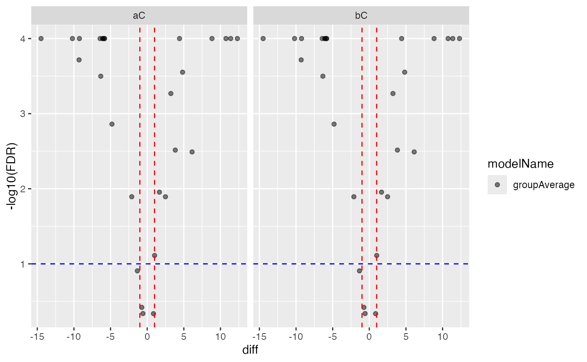
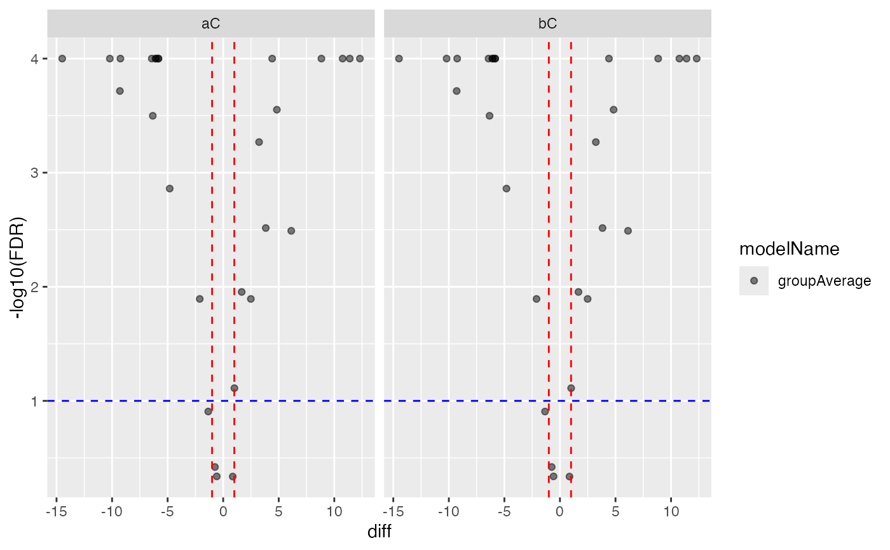

holds results when contrasts are added.
holds results when contrasts are added.
See also
summary_ROPECA_median_p.scaled
Other modelling:
Contrasts,
ContrastsMissing,
ContrastsModerated,
ContrastsPlotter,
ContrastsProDA,
ContrastsROPECA,
INTERNAL_FUNCTIONS_BY_FAMILY,
LR_test(),
Model,
build_model(),
contrasts_fisher_exact(),
get_anova_df(),
get_complete_model_fit(),
get_p_values_pbeta(),
isSingular_lm(),
linfct_all_possible_contrasts(),
linfct_factors_contrasts(),
linfct_from_model(),
linfct_matrix_contrasts(),
merge_contrasts_results(),
model_analyse(),
model_summary(),
moderated_p_limma(),
moderated_p_limma_long(),
my_contest(),
my_contrast(),
my_contrast_V1(),
my_contrast_V2(),
my_glht(),
pivot_model_contrasts_2_Wide(),
plot_lmer_peptide_predictions(),
sim_build_models_lm(),
sim_build_models_lmer(),
sim_make_model_lm(),
sim_make_model_lmer(),
strategy_lmer(),
summary_ROPECA_median_p.scaled()
Super class
prolfqua::ContrastsInterface -> ContrastsTable
Public fields
contrast_resultcontrast results
modelNamemodel name
subject_Iddefault protein_Id
Methods
Inherited methods
Method new()
intitialize
Usage
ContrastsTable$new(
contrastsdf,
subject_Id = "protein_Id",
modelName = "ContrastTable"
)Method to_wide()
convert to wide format
Usage
ContrastsTable$to_wide(columns = c("p.value", "FDR", "statistic"))Examples
bb <-prolfqua::sim_lfq_data_peptide_config()
#> creating sampleName from fileName column
#> Warning: no nr_children column specified in the data, adding column nr_children and setting to 1.
#> completing cases
configur <- bb$config$clone(deep=TRUE)
configur$table$hierarchyDepth <- 2
data <- bb$data
lfqdata <- LFQData$new(data, configur)
lfqdata$factors()
#> # A tibble: 12 × 3
#> sample sampleName group_
#> <chr> <chr> <chr>
#> 1 A_V1 A_V1 A
#> 2 A_V2 A_V2 A
#> 3 A_V3 A_V3 A
#> 4 A_V4 A_V4 A
#> 5 B_V1 B_V1 B
#> 6 B_V2 B_V2 B
#> 7 B_V3 B_V3 B
#> 8 B_V4 B_V4 B
#> 9 Ctrl_V1 Ctrl_V1 Ctrl
#> 10 Ctrl_V2 Ctrl_V2 Ctrl
#> 11 Ctrl_V3 Ctrl_V3 Ctrl
#> 12 Ctrl_V4 Ctrl_V4 Ctrl
Contrasts <- c("aC" = "group_A - group_Ctrl",
"bC" = "group_A - group_Ctrl")
csi <- ContrastsMissing$new(lfqdata, contrasts = Contrasts)
ctr <- csi$get_contrasts()
#> [1] "group_"
#> completing cases
#> aC=group_A - group_Ctrl
#> bC=group_A - group_Ctrl
#> aC=group_A - group_Ctrl
#> bC=group_A - group_Ctrl
#> aC=group_A - group_Ctrl
#> bC=group_A - group_Ctrl
csi$subject_Id
#> [1] "protein_Id" "peptide_Id"
xcx <- ContrastsTable$new(ctr, subject_Id = csi$subject_Id, modelName = "TableTest")
xcx$get_contrasts()
#> # A tibble: 56 × 21
#> modelName protein_Id peptide_Id meanAbundanceImp_gro…¹ meanAbundanceImp_gro…²
#> <chr> <chr> <chr> <dbl> <dbl>
#> 1 groupAve… 0EfVhX~00… ITLb4x1q 18.0 18.8
#> 2 groupAve… 0EfVhX~00… ahQLlQY7 25.8 21.0
#> 3 groupAve… 0EfVhX~00… dJkdz7so 15.5 17.6
#> 4 groupAve… 7cbcrd~57… D5dQ4nKk 29.5 17.2
#> 5 groupAve… 9VUkAq~47… eIC06D7g 18.0 27.3
#> 6 groupAve… BEJI92~52… HBkZvdhT 16.8 15.8
#> 7 groupAve… BEJI92~52… qQ1GK8Un 23.8 17.7
#> 8 groupAve… CGzoYe~21… mjHSHhoe 24.3 30.1
#> 9 groupAve… DoWup2~58… KVUnZ6oZ 23.8 19.4
#> 10 groupAve… Fl4JiV~86… GsUIOl6Q 19.1 17.4
#> # ℹ 46 more rows
#> # ℹ abbreviated names: ¹meanAbundanceImp_group_1, ²meanAbundanceImp_group_2
#> # ℹ 16 more variables: diff <dbl>, group_1_name <chr>, group_2_name <chr>,
#> # contrast <chr>, avgAbd <dbl>, indic <dbl>, nrMeasured_group_1 <int>,
#> # nrMeasured_group_2 <int>, df <int>, sigma <dbl>, std.error <dbl>,
#> # statistic <dbl>, p.value <dbl>, conf.low <dbl>, conf.high <dbl>, FDR <dbl>
xcx$get_Plotter()$volcano()
#> $p.value
 #>
#> $FDR

#>
stopifnot(is.null(xcx$get_contrast_sides()))
stopifnot(is.null(xcx$get_linfct()))
stopifnot(ncol(xcx$to_wide()) == 10)
#>
#> $FDR

#>
stopifnot(is.null(xcx$get_contrast_sides()))
stopifnot(is.null(xcx$get_linfct()))
stopifnot(ncol(xcx$to_wide()) == 10)